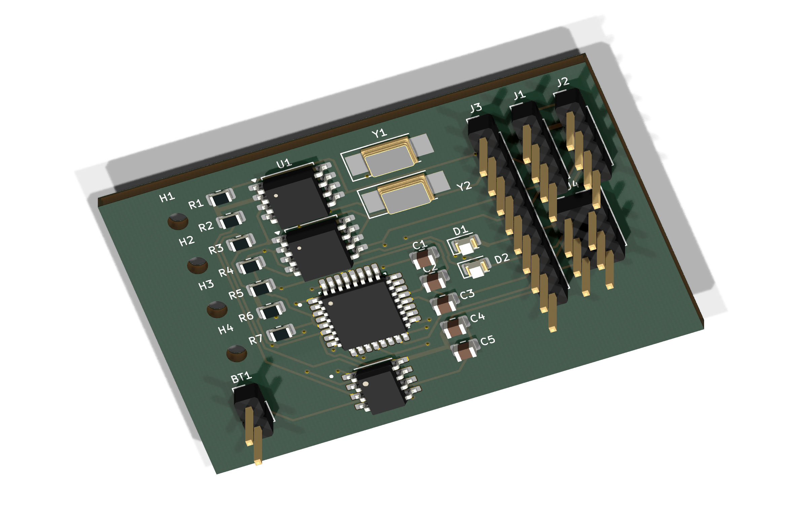
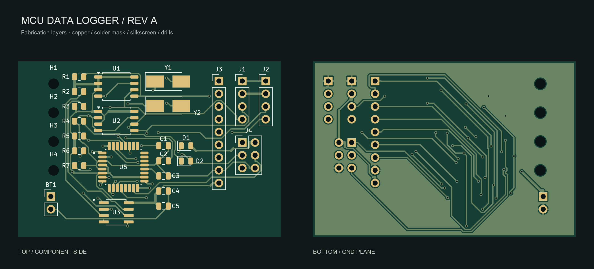
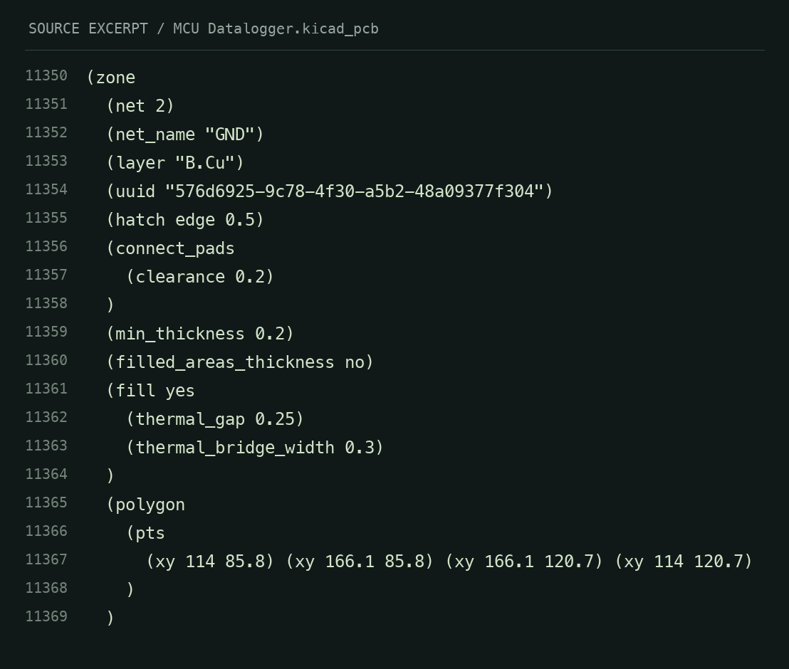

MCU Data Logger
An ATmega328P data-logging board with dual I²C EEPROMs and a real-time clock. A compact two-layer design, from schematic to fabrication package.

The challenge
Develop a compact microcontroller board with nonvolatile storage, timekeeping, accessible interfaces, and programming connections for future data-logging firmware.
Engineering work
ATmega328P-AUR in TQFP-32, two 24LC1025 I²C EEPROMs, a DS1337 RTC, and separate 16 MHz and 32.768 kHz crystals. UART, I²C, GPIO, and a 2×3 ISP header expose the development interfaces in an approximately 52.1 × 34.9 mm two-layer board.
Verification
KiCad reports zero DRC violations, zero unconnected pads, zero footprint/parity errors, and zero schematic ERC errors or warnings. The final board includes a filled B.Cu ground zone, explicit manufacturing rules, and wider power traces where clearance permits.
Design completion & next steps
Gerber and drill files are generated from the verified board. This is a hardware CAD and fabrication package; firmware development, board assembly, power-up checks, and physical performance testing remain bring-up work.
Fabrication view

Inside the design
SOURCE SNAPSHOTS
Read accessible code text
(zone
(net 2)
(net_name "GND")
(layer "B.Cu")
(uuid "576d6925-9c78-4f30-a5b2-48a09377f304")
(hatch edge 0.5)
(connect_pads
(clearance 0.2)
)
(min_thickness 0.2)
(filled_areas_thickness no)
(fill yes
(thermal_gap 0.25)
(thermal_bridge_width 0.3)
)
(polygon
(pts
(xy 114 85.8) (xy 166.1 85.8) (xy 166.1 120.7) (xy 114 120.7)
)
)